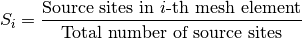
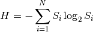

2. Criticality Calculations¶
A criticality calculation is a transport simulation wherein the source of neutrons includes a fissionable material. Some common criticality calculations include the simulation of nuclear reactors, spent fuel pools, nuclear weapons, and other fissile systems. The term criticality calculation is also synonymous with the term eigenvalue calculation. The reason for this is that the transport equation becomes an eigenvalue value equation if a fissionable source is present since then the source of neutrons will depend on the flux of neutrons itself. Criticality simulations using Monte Carlo methods are becoming increasingly common with the advent of high-performance computing.
This section will explore the theory behind and implementation of criticality calculations in a Monte Carlo code.
2.1. Method of Successive Generations¶
2.2. Source Convergence Issues¶
2.2.1. Diagnosing Convergence with Shannon Entropy¶
As discussed earlier, it is necessary to converge both  and the
source distribution before any tallies can begin. Moreover, the convergence rate
of the source distribution is in general slower than that of
. One should thus examine not only the convergence of
but also the convergence of the source distribution in order to
make decisions on when to start active batches.
and the
source distribution before any tallies can begin. Moreover, the convergence rate
of the source distribution is in general slower than that of
. One should thus examine not only the convergence of
but also the convergence of the source distribution in order to
make decisions on when to start active batches.
However, the representation of the source distribution makes it a bit more
difficult to analyze its convergence. Since is a scalar
quantity, it is easy to simply look at a line plot of versus the
number of batches and this should give the user some idea about whether it has
converged. On the other hand, the source distribution at any given batch is a
finite set of coordinates in Euclidean space. In order to analyze the
convergence, we would either need to use a method for assessing convergence of
an N-dimensional quantity or transform our set of coordinates into a scalar
metric. The latter approach has been developed considerably over the last decade
and a method now commonly used in Monte Carlo criticality calculations is to use
a metric called the Shannon entropy, a concept borrowed from information
theory.
To compute the Shannon entropy of the source distribution, we first need to discretize the source distribution rather than having a set of coordinates in Euclidean space. This can be done by superimposing a structured mesh over the geometry (containing at least all fissionable materials). Then, the fraction of source sites that are present in each mesh element is counted:
(1)
The Shannon entropy is then computed as
(2)
where  is the number of mesh elements. With equation
(2), we now have a scalar metric that we can use to assess the
convergence of the source distribution by observing line plots of the Shannon
entropy versus the number of batches.
is the number of mesh elements. With equation
(2), we now have a scalar metric that we can use to assess the
convergence of the source distribution by observing line plots of the Shannon
entropy versus the number of batches.
In recent years, researchers have started looking at ways of automatically
assessing source convergence to relieve the burden on the user of having to look
at plots of and the Shannon entropy. A number of methods have
been proposed (see e.g. [Romano], [Ueki]), but each of these is not without
problems.
2.3. Fission and Source Bank¶
| [Romano] | Paul K. Romano, “Application of the Stochastic Oscillator to Assess Source Convergence in Monte Carlo Criticality Calculations,” Proc. International Conference on Mathematics, Computational Methods, and Reactor Physics, Saratoga Springs, New York (2009). |
| [Ueki] | Taro Ueki, “On-the-Fly Judgments of Monte Carlo Fission Source Convergence,” Trans. Am. Nucl. Soc., 98, 512 (2008). |